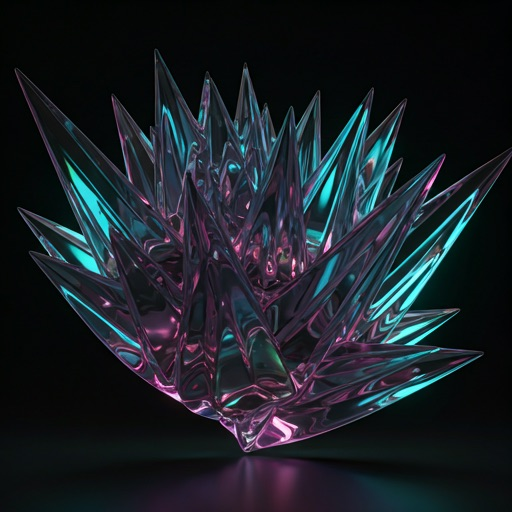
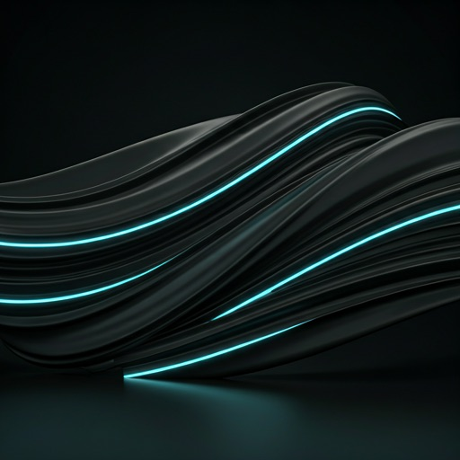
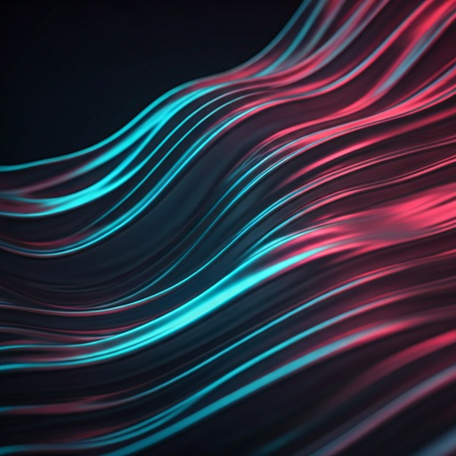

Bending Light Through
Liquid Geometry
Experience the future of interface design where every pixel is a refractive volume. Deep blurs, organic transitions, and high-fidelity glass surfaces.

Deep Refractive Surfaces
Our engine calculates real-time light physics to simulate the thickness of virtual glass slabs, providing unparalleled visual depth.
40px Gaussian
The optimal blur density for premium legibility and aesthetic softness in modern dark interfaces.
Dynamic Flow
Organic motion pathing that mimics liquid surface tension during layout shifts and interactions.
Spectral Highlights
Simulated 45-degree light source providing 1px crisp edge definitions to every UI container.
EXPLORE SPECS east
Refractive Render Engine
Organic Curvature
Non-linear radius calculations that adapt based on the container's proximity to other objects.
Depth Perception
Multi-layered backdrop filtering creates a true sense of vertical space in a flat screen.
Light Dispersion
Edges catch virtual light, throwing subtle spectral glows onto the background layers.

REFRACTION_TEST_04
Active Simulation
FPS
120.0
Ready to step into
the Fluid Void?
Join the early access archive and start building with the most advanced glassmorphism system ever engineered.